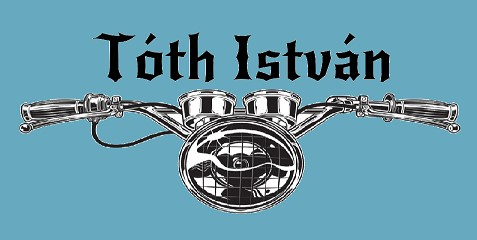

15évesen láttam neki egy régi Simson felújításának, azon a nyáron tanultam meg motorozni ezzel a motorral.
A gyüjteményem egyik ékköve : MZ ES 150/1 .
MTZ motorfelújításkor a kiemelt hajtórudak+dugattyúk .
Néhány projektem:
Szerelem, de szerelem a régebbi motorkerékpárokat lehet gyűlölni és szeretni, de leginkább a kettő egyszerre. A régebbi szocialista motorkerékpárok szerelése mellett a gyüjtésük is a hobbimmá vált. Ha érdekelnek ezek a motorok itt olvashatsz róluk. Most megmutatok pár képet ami bepillantást enged életem ezen részébe.